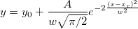

Abgeleitete Parameter in Standardfunktionen modifizieren
Fitting-AddDerivPara
Zusammenfassung
Abgeleitete Parameter sind zusätzliche Parameter, die mit den angepassten Parameterwerten berechnet werden. Sie können Ihre eigenen abgeleiteten Parameter für alle standardmäßigen oder benutzerdefinierten Anpassungsfunktionen definieren.
Sie sind nicht in den Anpassungsprozess eingebunden und werden nur am Ende des Anpassungsvorgangs berechnet.
Was Sie lernen werden
- Abgeleitete Parameter in einer standardmäßigen Anpassungsfunktion mit dem Hilfsmittel Fitfunktionen verwalten hinzufügen
- Abgeleitete Parameter in einer standardmäßigen Anpassungsfunktion mit dem Hilfsmittel Fitfunktionen verwalten entfernen
Abgeleitete Parameter hinzufügen
- Die integrierte Gauss-Funktion passt den Peakbereich mit der folgenden Gleichung an: 
Angenommen, dass Sie auch die Peakhöhe wissen möchten, führen Sie folgende Berechnung durch: 
- Wählen Sie Hilfsmittel: Fitfunktionen verwalten im Menü. Wählen Sie im linken Bedienfeld des Dialogs Origin Basic Functions: Gauss.
- Gehen Sie zu dem Abschnitt Abgeleitete Parameter und geben Sie h=A/(w*sqrt(PI/2)) ein.
Hinweis:
- Jeder abgeleitete Parameter sollte in einer separaten Zeile festgelegt werden.
- Abgeleitete Parameter können nicht aus anderen abgeleiteten Parametern berechnet werden.
- Klicken Sie auf Speichern und dann auf OK.
- Öffnen Sie ein leeres Arbeitsblatt. Wählen Sie Hilfe: Ordner öffnen: Sample-Ordner ... im Menü, um den Ordner "Samples" zu öffnen. Öffnen Sie in diesem Ordner den Unterordner Curve Fitting. Dort befindet sich die Datei Gaussian.dat. Ziehen Sie diese Datei per Drag&Drop in das leere Arbeitsblatt, um sie zu importieren.
- Markieren Sie Spalte A und B und wählen Sie dann Analyse: Anpassen: Nichtlinearer Fit, um den Dialog NLFIT zu öffnen, und dann die Option Gauss in der Auswahlliste Funktion zu wählen.
- Wechseln Sie zur Registerkarte Code und klicken Sie auf Abgeleitete Parameter im linken Bedienfeld. Die abgeleiteten Parameter werden im rechten Bedienfeld aufgelistet.
- Klicken Sie auf die Schaltfläche Fit, um die Berichtsblätter zu erzeugen. Nach der Anpassung berechnet Origin die Höhe und fügt das Ergebnis in die Tabelle Parameter im Ergebnisblatt der Anpassung ein.
- Wenn Sie das Konfidenzintervall für abgeleitete Parameter ermitteln möchten, können Sie auf das grüne Schloss klicken und Parameter ändern ändern, um zum Dialog NLFit zurückzukehren. Klicken Sie auf die Option Erweitert auf der Registerkarte Einstellungen, erweitern Sie den Zweig Eigenschaften im rechten Bedienfeld und aktivieren Sie die Kontrollkästchen UEG und OEG im Zweig Fit-Parameter. Klicken Sie zur Neuberechnung auf die Schaltfläche Fit.
- Die Konfidenzintervalle UEG 95% und OEG 95% werden dann sowohl für Parameter als auch abgeleitete Parameter wie unten berechnet:
Abgeleitete Parameter entfernen
Sie können abgeleitete Parameter aus dem Ergebnisblatt auch entfernen. Fahren Sie mit dem Tutorial oben fort, indem Sie die folgenden Schritte befolgen:
- Wählen Sie Hilfsmittel: Fitfunktionen verwalten im Menü, um den Dialog zu öffnen. Wählen Sie im linken Bedienfeld des Dialogs Origin Basic Functions: Gauss.
- Gehen Sie zu dem Abschnitt Abgeleitete Parameter und entfernen Sie den Ausdruck h=A/(w*sqrt(PI/2)) aus dem Feld:
- Sie müssen vielleicht ein oder zwei Sekunden warten, bevor die Schaltfläche Speichern aktiviert wird. Klicken Sie auf Speichern und dann auf OK, um den Dialog zu schließen.
- Klicken Sie auf das grüne Schloss oben links im Ergebnisblatt FitNL1, um Parameter zu ändern, und klicken Sie dann erneut auf Fit im angezeigten Dialog NLFit (Gauss). Sie sehen, dass der abgeleitete Parameter h aus der Ergebnistabelle entfernt wurde.